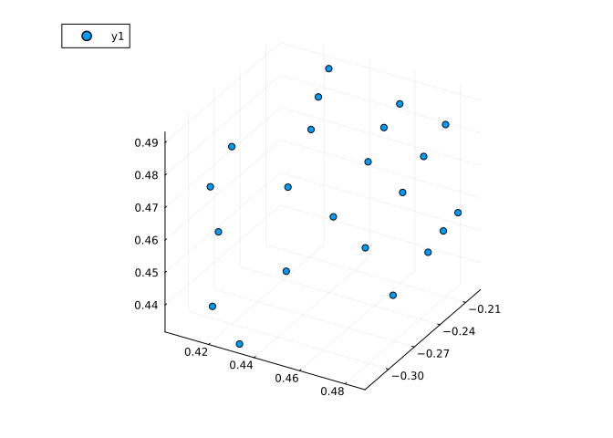
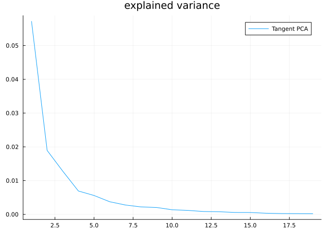
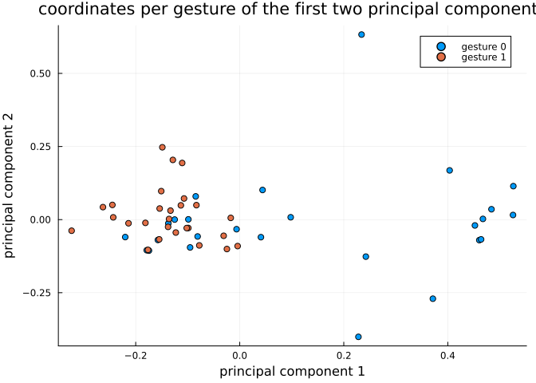
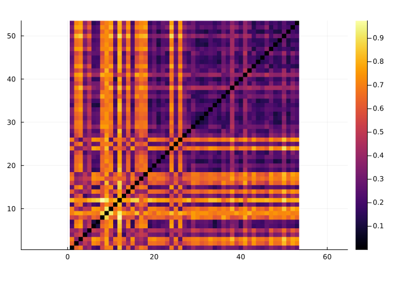

Hand gesture analysis
In this tutorial we will learn how to use Kendall’s shape space to analyze hand gesture data.
Let’s start by loading libraries required for our work.
using Manifolds, CSV, DataFrames, Plots, MultivariateStatsPrecompiling packages...
1726.0 ms ✓ QuartoNotebookWorkerTablesExt (serial)
1 dependency successfully precompiled in 2 seconds
Precompiling packages...
942.6 ms ✓ QuartoNotebookWorkerLaTeXStringsExt (serial)
1 dependency successfully precompiled in 1 seconds
Precompiling packages...
1006.8 ms ✓ QuartoNotebookWorkerJSONExt (serial)
1 dependency successfully precompiled in 1 seconds
Precompiling packages...
2122.7 ms ✓ QuartoNotebookWorkerPlotsExt (serial)
1 dependency successfully precompiled in 2 secondsOur first function loads dataset of hand gestures, described here.
function load_hands()
hands_url = "https://raw.githubusercontent.com/geomstats/geomstats/master/geomstats/datasets/data/hands/hands.txt"
hand_labels_url = "https://raw.githubusercontent.com/geomstats/geomstats/master/geomstats/datasets/data/hands/labels.txt"
hands = Matrix(CSV.read(download(hands_url), DataFrame, header=false))
hands = reshape(hands, size(hands, 1), 3, 22)
hand_labels = CSV.read(download(hand_labels_url), DataFrame, header=false).Column1
return hands, hand_labels
endload_hands (generic function with 1 method)The following code plots a sample gesture as a 3D scatter plot of points.
hands, hand_labels = load_hands()
scatter3d(hands[1, 1, :], hands[1, 2, :], hands[1, 3, :])
Each gesture is represented by 22 landmarks in $ℝ³$, so we use the appropriate Kendall’s shape space
Mshape = KendallsShapeSpace(3, 22)KendallsShapeSpace(3, 22)Hands read from the dataset are projected to the shape space to remove translation and scaling variability. Rotational variability is then handled using the quotient structure of KendallsShapeSpace
hands_projected = [project(Mshape, hands[i, :, :]) for i in axes(hands, 1)]In the next part let’s do tangent space PCA. This starts with computing a mean point and computing logithmic maps at mean to each point in the dataset.
mean_hand = mean(Mshape, hands_projected)
hand_logs = [log(Mshape, mean_hand, p) for p in hands_projected]For a tangent PCA, we need coordinates in a basis. Some libraries skip this step because the representation of tangent vectors forms a linear subspace of an Euclidean space so PCA automatically detects which directions have no variance but this is a more generic way to solve this issue.
B = get_basis(Mshape, mean_hand, ProjectedOrthonormalBasis(:svd))
hand_log_coordinates = [get_coordinates(Mshape, mean_hand, X, B) for X in hand_logs]This code prepares data for MultivariateStats – mean=0 is set because we’ve centered the data geometrically to mean_hand in the code above.
red_coords = reduce(hcat, hand_log_coordinates)
fp = fit(PCA, red_coords; mean=0)PCA(indim = 59, outdim = 19, principalratio = 0.9911352546524488)
Pattern matrix (unstandardized loadings):
────────────────────────────────────────────────────────────────────────────────────────────────────────────────────────────────────────────────────────────────────────────────────────────────────────────────────────────────────────────────────────────────────────────
PC1 PC2 PC3 PC4 PC5 PC6 PC7 PC8 PC9 PC10 PC11 PC12 PC13 PC14 PC15 PC16 PC17 PC18 PC19
────────────────────────────────────────────────────────────────────────────────────────────────────────────────────────────────────────────────────────────────────────────────────────────────────────────────────────────────────────────────────────────────────────────
1 0.0538049 0.00645958 -0.00910276 0.00611249 0.00438679 0.00692311 0.000540311 0.00128537 0.000121305 -0.00175783 0.00702376 0.00126514 0.00380924 -0.00116061 -0.00293169 0.00191426 -0.00266314 -0.00142163 0.00263091
2 0.00545881 0.0122799 0.0205784 -0.00242646 -0.0164079 -0.00191331 0.00803455 -0.00456535 0.00728061 0.00150252 -0.00691259 -0.00286708 0.000305672 -0.000670858 0.00121618 -0.000854429 0.000316959 -0.00019508 -0.00164048
3 0.0134578 0.0162733 -0.00468936 0.004629 -0.000406054 -0.00294179 0.0133055 -0.00236661 -0.00399819 -0.0114217 0.000374949 0.000852859 0.00545654 0.00317915 -0.000709136 -0.00202895 -0.00145343 0.0019812 -0.000539856
4 0.0512875 -0.0415696 0.00396302 9.4892e-5 0.00705296 -0.0175128 -0.0117796 0.0108598 0.00418305 -0.000819665 -0.00462255 -0.00166127 0.00838541 -0.00176132 -0.00401692 -0.00377975 0.000404946 0.00108832 9.68305e-5
5 -0.0137849 0.010552 0.0241335 0.00955277 0.00264907 -0.0015757 0.00235059 0.00228199 -0.00890694 0.0033598 -0.00605462 0.0018918 0.00578206 -0.000634854 -0.000328137 0.00104127 -0.000262494 0.00290596 -0.00109329
6 0.00815246 -0.0238923 0.0262791 0.00710614 -0.0134504 0.00435667 0.000602662 0.00785174 0.0106378 -0.00381989 0.00549638 -0.000374252 -0.0056299 -0.0051045 -0.00204141 0.000459476 0.00112412 -0.000487693 0.00028204
7 0.0317631 0.0324797 0.0160226 -0.021818 -0.00433735 0.012446 0.00371942 0.00876112 0.00102734 -0.00343738 0.00465874 0.0054752 0.000895496 0.00194333 -0.00248607 0.000114233 0.00303502 -0.00023715 0.000345093
8 0.0198936 0.0103249 -0.00392684 -0.00358797 0.023541 -0.00586661 0.000759762 -0.000219634 0.0014104 0.000792392 -0.00051192 -0.00384516 -0.00192711 0.000655252 -0.000508652 0.000902375 0.00082906 0.00195137 0.000460526
9 0.00598453 -0.0222748 -0.000902645 -0.0119713 0.0131584 -0.00370495 0.0078901 -0.00111535 0.0072971 -0.000939712 0.00252063 0.000899434 0.00145882 -0.00123539 -0.00193167 0.00401761 0.000775409 0.00075134 0.00200134
10 0.0445345 -0.0322114 0.000840285 -0.00059518 0.0153492 0.00917684 0.00763974 0.00787339 -0.00149472 -0.00696345 -0.00776416 3.0969e-5 -0.000973323 -0.0022196 0.00357044 0.00292358 -0.00236403 -8.31145e-5 -0.000634761
11 0.0394643 0.0101696 0.00506011 -0.00758644 0.000110374 0.00978282 -0.00741462 -0.00314205 -0.0104358 0.000927401 -0.00169415 -0.00468581 -3.30769e-5 -0.00138572 -0.00313557 0.0021825 0.000405906 -0.00234085 -0.000471517
12 0.0643757 -0.0014192 -0.0159775 0.00749579 -0.0114924 0.00185706 0.000179876 0.00907037 -0.0023238 -0.00376532 0.00175872 0.00457312 0.00301067 -0.00382971 0.0035012 -0.00266478 0.00127493 0.00317387 0.000443136
13 0.0012446 0.00374578 -0.00945016 -0.00141533 0.000333675 0.00134301 0.00616375 -0.000216696 -0.0017487 -0.00355972 -0.00440171 -0.00413041 -0.000357076 -0.00111557 0.000495659 -0.00234026 -0.00560453 -0.00158281 0.0018742
14 0.0164659 0.0260773 0.0203791 0.00262238 0.00822621 0.00563972 -0.00977794 0.000269256 0.00873509 0.000316608 -0.00576338 -0.004783 -0.00157643 -0.00306456 -0.00201439 0.00084027 -0.00193072 0.00221635 0.00337875
15 0.033129 0.0167587 -0.00344402 0.0127053 -0.00580884 -0.00908279 0.00283679 -0.00295972 -0.00493105 0.00306252 0.00354702 0.00049343 -0.00289561 -0.00304144 1.58846e-5 0.000544819 -0.00125563 -0.000736175 -0.00126344
16 0.0460248 -0.0224662 -0.00709571 -0.000984044 0.0154099 -0.00120626 -0.00439434 -0.0019158 -0.00382514 0.00300851 0.00102629 0.00204662 -0.00295523 0.00347509 0.00404941 -0.00259527 -0.00143644 -0.00120789 -0.0024985
17 -0.0125404 -0.00332823 -0.00914825 -0.00388261 0.0056461 0.00711181 0.00473531 0.00706509 0.000139939 0.000857431 -0.0034082 0.00320438 0.00425944 0.0014756 -0.00654635 0.00629886 -0.00132727 -0.001899 -0.0018991
18 0.0205369 0.0147838 -7.66216e-7 0.0222459 -0.013587 -0.0123037 0.00252975 0.00436295 0.00574329 0.0025532 -0.000181854 0.00692164 -0.000660308 0.00218337 -0.00502294 0.00124997 0.000156992 -0.00341167 0.000170436
19 -0.000542804 0.00184725 0.0123878 -0.00215818 0.00265994 0.0145817 -0.000105378 0.00526051 -0.00284491 0.00626733 -0.00490792 -0.00357741 -0.00139591 4.47113e-5 0.00635894 -0.00315984 -0.00183749 -0.00243727 0.0040322
20 -0.015885 0.0289325 0.025139 0.00897764 0.0130402 -0.000931459 -0.00135771 -0.0143746 -0.00384586 -0.000770881 -0.00483403 0.00448052 -0.0055013 -0.0063813 -0.00575014 0.000758756 -3.06143e-5 0.00224265 0.00128744
21 0.0704557 0.000675364 0.00702822 0.00585432 0.00361828 -0.00609643 0.00268297 -0.00770916 0.00165 0.00621026 -0.00444324 0.00527596 -0.0012984 -6.3215e-5 0.000468731 -1.07037e-5 -0.00118199 -0.0021364 -0.000483622
22 -0.00699116 0.00357797 0.015852 0.000782924 -0.00897436 0.00161983 -0.00115109 -0.00229362 -0.0189801 0.00656097 0.00515596 0.000351953 -0.00201922 0.00112162 -0.00417862 -0.00151565 -0.000677394 -0.00166392 -0.0019517
23 0.0290714 -0.0115273 0.00743888 0.011259 -0.00671923 -0.00460807 -9.78459e-5 -0.00580045 0.00276078 -0.00402339 0.00160773 -0.00726872 -0.0017044 -0.00275147 0.00830194 0.00516591 0.00223755 0.00395379 -0.00395327
24 0.0179936 -0.00173279 -0.0223811 0.0424529 0.00618711 0.0170113 0.00423316 0.000826961 -0.00350263 0.00550146 0.000832717 -0.00246746 0.00501734 -0.00198861 -0.00294331 -0.00371685 0.00233333 0.00181547 0.000612299
25 -0.00592374 0.0539413 0.00301863 0.00923149 0.0113917 -0.0074589 0.00136002 0.00371303 0.00754632 -0.00396619 -0.00855043 -0.00337454 0.000600585 -0.00179704 0.00345602 -0.00381035 0.00419625 -0.00235125 -0.00190444
26 -0.0276883 -0.0010834 0.00101727 -0.0082447 0.011496 0.00123512 0.00992036 0.000507335 0.0027087 0.0023295 0.00168465 0.00716899 0.00570183 -0.00421696 0.00446296 0.000232971 4.91569e-5 -0.00300197 -0.00216579
27 -0.0266451 -0.020006 0.0101763 0.00550689 0.00366441 -0.0011524 0.00419416 0.00084818 0.00293979 -0.00515535 -0.00152071 0.00439331 5.70481e-5 0.000768339 -0.00236535 -0.00355794 -0.000819817 0.00270403 0.000444501
28 0.035205 -0.00355143 0.0484069 0.00632607 -0.0134669 0.00398804 0.00876059 0.00750863 -0.005208 0.000702468 -0.00141822 -0.00322703 0.000632634 0.00429936 0.00237397 0.00373275 -0.000876368 0.000808231 -0.00173341
29 -0.0143657 -0.0131069 -0.00940011 -0.00667037 -0.00508591 -0.000120618 -0.00150251 0.004934 0.0070958 0.0149524 0.00274555 -0.00555671 0.00204205 -0.00128261 -0.000276672 0.00088675 0.0012332 -0.00102521 -0.00114532
30 -0.0091908 0.00313792 -0.0165128 0.0015232 0.00421664 0.00938347 0.000530278 0.000223435 0.00487849 -0.00110154 0.00115364 -0.00387069 0.00157832 0.00407514 -0.00133847 0.00318295 0.00229289 0.00043934 -0.000284052
31 0.0181173 0.000372612 0.000104964 -0.000915804 -0.00561719 0.0035738 0.00875341 -0.00985228 0.0158991 -0.00522352 0.00255381 -0.00106944 -0.000459574 0.00861409 0.000266647 -0.000925733 -0.000598243 -0.000983971 -0.000392403
32 -0.00114979 -0.00686249 -0.0077384 0.0076394 -0.00826607 -0.00452592 -0.00320655 -0.0111446 0.00431118 -0.00385166 0.00566625 -0.00270487 0.00476334 -0.00473558 4.39964e-5 0.00312479 -0.00144642 0.000196091 9.68171e-5
33 -0.00352882 -0.00130032 -0.00274232 0.0068881 0.0012917 -0.00139583 -0.00725427 0.00350532 0.00768069 0.000456403 -0.0100959 0.0072448 -0.00227885 0.00797009 -0.00305179 0.00175867 -0.00110886 0.00256104 -0.0021362
34 0.00855708 -0.00213394 -0.00953971 0.00164838 0.0257756 0.00423456 -0.00213573 -0.00326818 -0.00561464 -0.00819228 0.00325991 -0.000529823 -0.00588304 0.00316048 -0.00113027 0.000589623 0.00183121 -0.00168583 -0.00350807
35 -0.0139071 0.00447148 0.0156842 -0.00215871 0.00202578 0.00469126 -0.00637718 -0.00942781 0.00939657 0.0097123 -0.000251889 0.00286606 0.00296391 -0.000143772 0.0056718 0.00180318 -0.00236129 -0.000153447 0.000196667
36 0.045633 -0.0265422 0.00947087 -0.00347292 -0.00884043 0.00536738 0.00853697 0.00178765 0.000914481 -0.00267149 -0.00152174 -0.00151235 -0.00136746 -0.00109534 -0.000135156 -0.00327967 0.00312124 -0.00204529 0.00148578
37 0.0114518 0.013134 0.0157829 -0.00115147 0.00740056 0.010166 -0.0108024 0.013494 0.00124103 -0.00589773 0.000126742 0.00466383 -0.00135126 -0.00555348 0.00408428 0.000799815 -0.00327385 -0.0021101 -0.00169674
38 -0.051942 -0.0122156 -0.000945413 0.0024594 -0.0040919 0.00706533 -0.000336886 0.00818658 0.00738884 0.00272037 0.00519636 0.00143033 -0.0120042 0.000338911 -0.00129811 -0.00298893 -0.00155399 0.00184956 -2.11317e-5
39 0.0200877 -0.0100729 -0.0119603 0.00876826 0.00770274 -0.0150486 -0.0127606 0.00307441 4.08795e-6 0.00131213 -0.000465363 -0.00396328 -0.00155502 0.00232577 0.000725368 0.00364201 -0.000334257 -0.00336716 0.00290954
40 0.0335409 0.0161859 0.00665906 0.0169687 0.00806985 -0.00140473 -0.00569719 0.00905747 -0.00257096 -0.00118406 0.00345635 -0.00270095 -0.0045102 0.00115951 9.35497e-5 0.00262018 -0.000137796 0.00119324 -0.000308975
41 0.0133797 0.027911 -0.0036357 -0.00674104 0.00111931 0.00811882 -0.00412365 0.00706775 0.00226224 0.00496473 -0.00190819 -0.00225628 0.000134455 0.00615392 -0.000690927 0.000261717 0.00303029 0.00338055 -0.000554591
42 0.0478586 -0.00680018 0.0255572 0.0102122 0.00879084 0.00632446 0.00106409 -0.00767083 -0.00125538 1.18178e-5 0.00977394 -0.00358474 0.000857202 0.00598609 0.000686145 -0.00129714 0.000717468 -0.00056822 0.00184146
43 0.00437553 -0.0267062 0.0297047 0.0135921 0.0236701 0.00314758 0.0112287 -0.00523892 0.00784629 0.00627076 -0.0013543 0.00405576 -2.79448e-5 -0.00103784 -0.00163324 0.000125019 0.00310261 -0.001437 0.0018066
44 0.0296134 0.0290462 -0.00136879 -0.00445012 0.00616276 -0.000397892 0.00181224 0.000744139 0.00520006 -0.00265731 0.00720875 0.000581392 0.000178564 0.00025188 -0.000395406 0.000732598 -0.00344094 0.00031573 0.0014763
45 0.034062 0.00771948 -0.0198454 -0.00753996 -0.00656647 0.00347414 0.0053258 -0.00304507 -0.000205983 0.0053646 -0.00463181 -0.000867448 -0.00216253 -0.00294486 -0.00142321 0.00148664 -0.00097655 0.00416141 0.00189782
46 0.029198 0.0034234 0.00224783 -0.0104435 0.00419528 0.00402917 -0.00989902 -0.00435373 0.00639065 0.00286526 0.00263049 0.00273062 0.00397479 -0.0013998 -0.000187743 -0.00278184 -0.00161206 0.00229769 -0.00385752
47 -0.0416734 0.0209738 0.0174765 -0.0053256 0.0172418 -0.0148113 0.00749243 0.0154023 -0.00178216 0.00548053 0.00995182 -0.00243183 0.00435686 0.000197474 0.000652836 0.000157164 0.00121705 0.00138982 0.000582207
48 0.00137186 -0.00292706 -0.0163428 0.000115729 0.00366847 -0.00849321 0.00143274 0.0045777 -7.02275e-5 0.00177778 -0.00203257 0.00159073 -0.00825159 -0.000369355 0.00288368 -0.00107753 0.00103687 0.000566598 0.000410891
49 0.0130288 0.0209061 -0.0140804 0.00309225 0.00436655 0.00905275 -0.00568186 -0.00334331 0.00392639 0.00105261 0.00550434 0.00548983 0.00242908 0.00213726 0.00531251 -0.00121784 -0.00236821 0.00183119 0.00142892
50 -0.0564199 -0.0102939 0.00963178 0.00423987 0.00533248 0.00684811 -0.0132265 -0.00681672 -0.00301639 -0.00563969 0.00230274 0.0032142 0.00201831 -0.000674543 0.0034307 -0.000573875 0.00588962 -0.000802965 0.000105962
51 -0.0301822 -0.010233 0.0213854 -0.00201548 -0.00360253 -0.00439437 -0.0099309 -0.000311219 -0.00305746 -0.0040603 0.00360195 0.0032876 0.00388564 0.000546657 0.00138414 0.00140919 0.000199311 0.0025409 0.0039365
52 0.00520671 0.00455208 -0.013862 0.0121728 -0.00456221 -0.00488888 0.00671567 0.00270161 -0.00657385 0.00561211 -0.00199429 0.00867875 -0.000824054 0.00411662 0.00873539 0.00345316 0.00181871 0.000488925 0.00294748
53 0.00967969 0.0247266 0.0155992 0.00901927 -0.0073175 -0.0150418 -0.00791981 0.000750426 0.00468076 -0.00453161 0.00184525 -0.00101872 0.00142525 0.00373064 0.00109383 -0.00198704 -0.000982964 -0.00309372 0.000789216
54 0.0398679 -0.00935411 0.00507763 -0.0153312 0.000471957 -0.0111835 0.00152005 -0.00183611 -0.00427358 -0.00092306 0.00283017 0.00372099 -0.0056269 0.00118983 -2.33598e-5 9.07171e-6 0.00208956 0.00256247 0.00302792
55 -0.0350701 -0.0128809 0.00432237 0.00642986 0.00185451 0.00781239 -0.00345148 0.00138928 0.000251778 -0.00043079 -0.00462626 -0.00530593 0.00238495 0.00724406 9.08959e-5 -0.000526729 -0.00134053 0.000141702 0.00176025
56 0.0621253 0.018822 -0.0119531 -0.00566967 -0.0023125 0.00559742 -0.00176917 0.000355052 0.00799409 0.00449253 0.00276763 0.000373528 -0.000942881 -0.00375925 -0.00138777 0.000364407 0.0043776 -0.00091076 -0.000190037
57 0.000520357 0.00637018 -0.0105504 -0.00607313 -0.0112332 0.00577427 -0.00585944 -0.00100333 -0.00227682 -0.006797 -0.00786201 0.00209018 0.00157887 -0.00037247 0.000194969 0.00261657 0.00466422 -0.00245737 0.00363096
58 -0.016911 0.0184189 -0.00646425 -0.0117201 0.00939154 -0.00842621 0.0150508 -0.000977816 -0.00167283 -0.00139708 -0.000944329 -0.00568792 -0.00040067 -0.00169226 0.00142497 -0.000585705 -0.000183617 -2.23767e-5 0.00164204
59 -0.0682478 0.00599257 -0.012763 0.0247038 -0.00210712 0.00432966 0.00487873 0.00623602 0.00522675 -0.00382139 0.00375254 -0.000525159 -0.001633 -0.0029177 0.000406667 0.00257925 -0.00109553 -0.000750623 0.000354475
────────────────────────────────────────────────────────────────────────────────────────────────────────────────────────────────────────────────────────────────────────────────────────────────────────────────────────────────────────────────────────────────────────────
Importance of components:
─────────────────────────────────────────────────────────────────────────────────────────────────────────────────────────────────────────────────────────────────────────────────────────────────────────────────────────────────────────────────────────────────
PC1 PC2 PC3 PC4 PC5 PC6 PC7 PC8 PC9 PC10 PC11 PC12 PC13 PC14 PC15 PC16 PC17 PC18 PC19
─────────────────────────────────────────────────────────────────────────────────────────────────────────────────────────────────────────────────────────────────────────────────────────────────────────────────────────────────────────────────────────────────
SS Loadings (Eigenvalues) 0.0588352 0.0185409 0.0126232 0.00635452 0.00550521 0.00348098 0.00260927 0.00216744 0.00205273 0.00130146 0.0011912 0.00084281 0.000762495 0.000629914 0.000578417 0.000326502 0.000276571 0.000229781 0.000207644
Variance explained 0.492031 0.155055 0.105566 0.053142 0.0460393 0.029111 0.0218209 0.018126 0.0171667 0.0108839 0.00996188 0.0070483 0.00637664 0.00526788 0.00483722 0.00273049 0.00231292 0.00192163 0.0017365
Cumulative variance 0.492031 0.647086 0.752652 0.805794 0.851833 0.880944 0.902765 0.920891 0.938058 0.948942 0.958904 0.965952 0.972329 0.977596 0.982434 0.985164 0.987477 0.989399 0.991135
Proportion explained 0.496432 0.156442 0.10651 0.0536173 0.0464511 0.0293714 0.0220161 0.0182881 0.0173203 0.0109813 0.010051 0.00711135 0.00643368 0.005315 0.00488049 0.00275491 0.00233361 0.00193881 0.00175203
Cumulative proportion 0.496432 0.652874 0.759384 0.813001 0.859452 0.888823 0.910839 0.929128 0.946448 0.957429 0.96748 0.974591 0.981025 0.98634 0.991221 0.993976 0.996309 0.998248 1.0
─────────────────────────────────────────────────────────────────────────────────────────────────────────────────────────────────────────────────────────────────────────────────────────────────────────────────────────────────────────────────────────────────Now let’s show explained variance of each principal component.
plot(principalvars(fp), title="explained variance", label="Tangent PCA")
The next plot shows how projections on the first two principal components look like.
fig = plot(; title="coordinates per gesture of the first two principal components")
for label_num in [0, 1]
mask = hand_labels .== label_num
cur_hand_logs = red_coords[:, mask]
cur_t = MultivariateStats.transform(fp, cur_hand_logs)
scatter!(fig, cur_t[1, :], cur_t[2, :], label="gesture " * string(label_num))
end
xlabel!(fig, "principal component 1")
ylabel!(fig, "principal component 2")
fig
The following heatmap displays pairwise distances between gestures. We can use them for clustering, classification, etc.
hand_distances = [
distance(Mshape, hands_projected[i], hands_projected[j]) for
i in eachindex(hands_projected), j in eachindex(hands_projected)
]
heatmap(hand_distances, aspect_ratio=:equal)